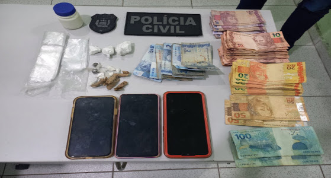

"Operação Tratado de Tordesilhas 2"
A Polícia Federal deflagrou a "Operação Tratado de Tordesilhas 2", para investigar crimes em detrimento de bens públicos federais no âmbito do Programa de Regularizações Fundiárias (Reurb).
Motorista perde o controle da direção
Na noite de (04/06), por volta das 23h10, na BR-343, na cidade de Parnaíba, ocorreu um acidente do tipo colisão. As informações foram repassadas pela Polícia Rodoviária Federal.
Ex-funcionário de universidade privada aplica golpes em alunos
Um jovem de 22 anos, ex-funcionário do setor financeiro de uma universidade particular, foi preso nesta quinta-feira (06), por desviar dinheiro de renegociações de dívidas de pelo menos 13.

Motorista colide na traseira de caminhão
Aconteceu um acidente – tipo colisão transversal - envolvendo um veículo de passeio modelo Chevrolet Corsa Classic e um Caminhão, conduzido por um homem de 35 anos, que transportava ração para frango que saiu ileso.

Polícia Civil cumpre mandado de busca e apreensão
A Polícia Civil do Piauí, cumpriu neste sábado (06/06/2024), mandados de busca e apreensão em um imóvel localizado na Rua Picos, bairro Bebedouro, nesta cidade.
Policia Militar deflagra operação na Ilha de Santa Isabel
Policiais Militares deram entrada por volta das 18hs 30 deste sábado (08), na central de flagrantes de Parnaíba, conduzindo 04 suspeitos acusados de tráfico e drogas e outros crimes.